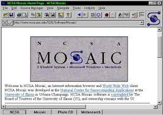
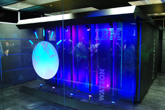

| Evolución de las aplicaciones web. |
| Hitos |
Años |
Hechos |
Imágenes |
Referencias |
| web 1.0 |
1990 |
Tim Berners-Lee creó el primer navegador web y el primer servidor web, sentando las bases para la World Wide Web. |
 |
- Van Der Henst, C. (2005). ¿ Qué es la Web 2.0. Recuperado el, 15, 95-106.
- Latorre, M. (2018). Historia de las web, 1.0, 2.0, 3.0 y 4.0. Universidad Marcelino Champagnat, 1.
- Salaverría-Aliaga, R., & Sancho, F. (2007). Del papel a la Web. Evolución y claves del diseño periodístico en internet. Servicio Editorial de la Universidad del País Vasco.
|
| 1993 |
se lanzó el primer navegador gráfico, Mosaic, que permitía la visualización de imágenes y texto en una misma página. |
 |
| 1995 |
se fundó eBay, uno de los primeros sitios web de comercio electrónico, que marcó el inicio de las transacciones en línea a gran escala. |
.jpeg) |
| web 2.0 |
2004 |
se lanzó Facebook, una de las primeras redes sociales que permitía a los usuarios compartir contenido y conectarse con otros de manera más interactiva. |
.jpeg) |
| 2005 |
se introdujo el término "Web 2.0" en la conferencia O'Reilly Media Web 2.0, que enfatizaba la interactividad y participación del usuario en la web. |
.jpeg) |
| 2006 |
Google adquirió YouTube, lo que marcó un hito en la popularización de la transmisión de videos en línea y el contenido generado por el usuario. |
 |
| web 3.0 |
2010 |
1. A partir de 2010, el auge del "big data" y el análisis predictivo empezó a influir en el desarrollo web, permitiendo una mayor personalización en los servicios en línea. |
.jpeg) |
| 2011 |
2. En 2011, IBM Watson, un sistema de inteligencia artificial, compitió y ganó en el concurso de preguntas y respuestas Jeopardy!, mostrando el potencial de la inteligencia artificial en la web. |
 |
| 2015 |
3. En 2015, se popularizó el término "Internet de las cosas" (IoT), que se refiere a la interconexión de dispositivos físicos a través de internet, dando lugar a aplicaciones web más integradas con el entorno físico. |
|
| web 4.0 |
2015 |
Aparición de la inteligencia artificial y el aprendizaje automático en la web. Los algoritmos avanzados y las capacidades de procesamiento de datos permiten una mayor personalización y recomendaciones más precisas en los sitios web. |
.jpeg) |
| 2020 |
Desarrollo de la Internet de las cosas (IoT) y la conectividad ubicua. Los dispositivos inteligentes y los sensores conectados a la web permiten la interacción y el control remoto de objetos físicos, como electrodomésticos, vehículos y sistemas de seguridad. |
 |